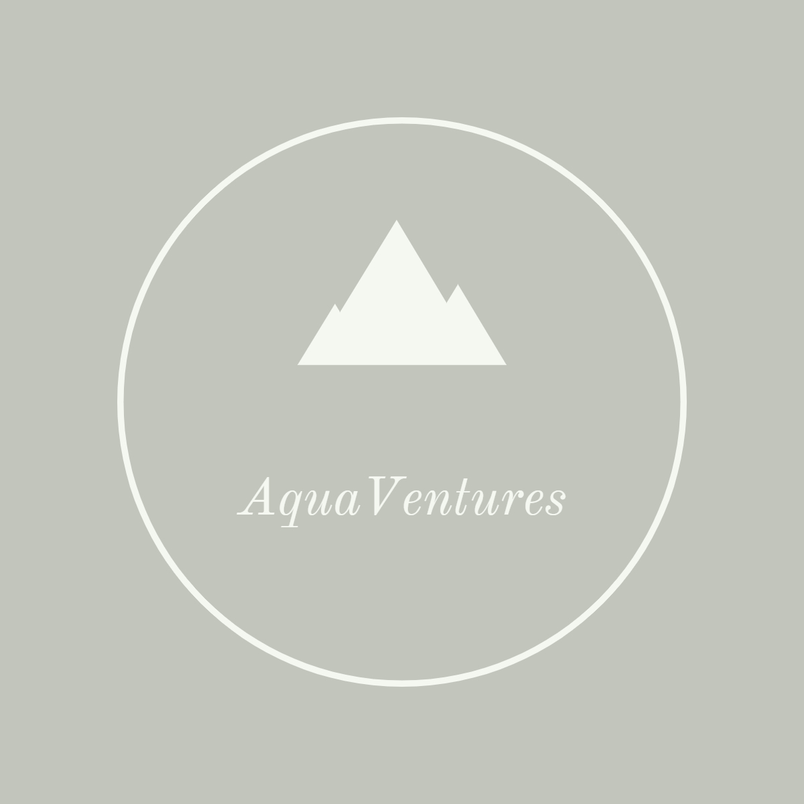

Overview
Purpose
To give people information on our white water rafting tours. We are availabe to allow people to book appointments, view previous rafting trips, and become informed about our company. Our goal is to persuade visitors to choose our company for white water rafting over other companies out there. We will do this by displaying a gallery of the average white water rafting tour, showcasing our amazing employees, and explaining why we are the best option.
Audience
Our audience is adrenaline junkies who love to go on adventures! Targeting a range of ages, but particularly 12-45. Our tours are intense, and although we have beginner tours, we are targetting the more advanced and skilled adventurers.
Branding
Website Logo
Style Guide
Color Palette
Palette URL:
https://coolors.co/palette/e7cebe-ddbea9-c7987f-c5c9ce-b8c1cc-9ca8b6-c2c5bc-a5a58d-6b705c| Primary | Secondary | Accent 1 | Accent 2 |
|---|---|---|---|
| [#6B705C] | [#9CA8B6] | [#C2C5BC] | [#DDBEA9] |
Typography
Heading Font: Cinzel
Paragraph Font: Arima
Normal paragraph example
The best Whitewater Rafting in Colorado, White Water Rafting Company offers rafting on the Colorado and Roaring Fork Rivers in Glenwood Springs. Since 1974, we have been family owned and operated, rafting the Shoshone section of Glenwood Canyon and beyond.
Colored paragraph example
Trips vary from mild and great for families, to trips exclusively for physically fit and experienced rafters. No matter what type of river adventures you are seeking, AquaVenture can make it happen for you.
Navigation
Site Map
Wireframes
Home